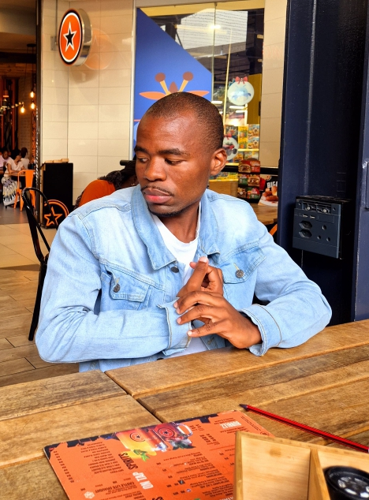

About Me
Hi, I`m Jim Kujwane Sebopela, a self-taught web developer with a passion for building innovative digital solutions. I started my journey with HTML, CSS and Javascript crafting visually appeling and user-friendly interfaces. As I grew in my craft, I expanded my skillset to PHP, continually refining my coding skills to deliver dynamic and robust web applications. I`m dedicated to staying up-to-date with the latest web development trends and best practices, always looking for opportunities to learn and grow
In my free time, I enjoy exploring new technologies and experimenting with different coding techniques to improve my skills, I`m excited to collaborate with others, share my knowledge, and learn from fellow developers.
If you`re looking for a dedicated and passionate web developer who can bring your ideas to life, let`s connect! i`m always open to new opportunities and collaborations that can help me grow as a developer and deliver high quality solutions. whether you`re a startup looking to launch your MVP or an online presence, i`m here to help. Let`s discuss how we can work together to create a website that not only looks great but also drive results. Feel free to reach out to me directly through my contact page or connect with me on social media to start the conversation. Let`s build something amazing together!
Skills and Specialities
As a self-taught web developer, I’ve honed my skills in crafting dynamic and user-friendly web applications. My expertise includes HTML, CSS, PHP, and JavaScript, which allows me to build robust and interactive websites. I am proficient in creating responsive designs that work seamlessly across desktops, tablets, and mobile devices. I focus on writing clean, maintainable code while ensuring optimal performance and accessibility. Additionally, I enjoy exploring new technologies, frameworks, and libraries to continuously improve my development skills. Whether it's front-end interface design, back end functionality, or integrating APIs, I am dedicated to delivering high-quality web solutions that meet client requirements and provide engaging user experiences.
Projects & Experiences
I have developed several personal web projects that reflect my growing expertise in front-end development. Through consistent practice, I’ve built and refined websites using HTML, CSS, and JavaScript, focusing on creating responsive and visually engaging layouts that work seamlessly across devices. My experience includes designing user-friendly interfaces, improving accessibility, and experimenting with interactive features that enhance user engagement. I enjoy turning creative ideas into functional websites and continuously improving my skills as a web developer.